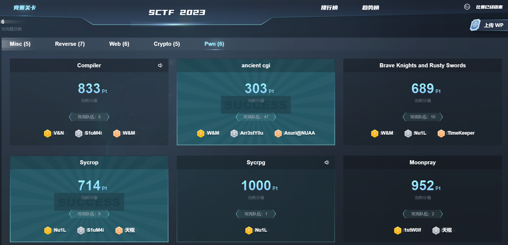

SCTF 2023 Kernel Pwn Sycrop

分析
基本信息
题目附件：sycrop.zip
防护措施：kaslr，smep，smap，kpti
漏洞点
本题ko代码量不大，漏洞点也比较明显
1 | __int64 __fastcall seven_ioctl(file *filp, __int64 cmd, unsigned __int64 arg) |
两个漏洞总结如下：
cmd=0x5555可以泄露任意内核地址的内容（仅能泄露低4字节内容）
cmd=0x6666可以将内核栈迁移到任意位置
问题来了，本题开启了KASLR，需要信息泄露后才能继续往下做，所以从哪个位置泄露呢？经过一顿尝试以及查找资料，在hxp的这篇博客中发现了cpu_entry_area，系统调用modify_ldt会改变0xffff880000000000（LDT remap for PTI）区域的内容。于是有了如下测试：
利用sys_modify_ldt写可以在0xffff880000000000区域创建新的ldt，内容用户态可控，但不是全部可控。无法构造rop，尝试失败
cpu_entry_area区域无随机化，且有内核地址，如0xfffffe0000002f38这个固定地址处处能泄露一个内核地址。cpu_entry_area还有个神奇的发现，当用户态执行系统调用时，有一定概率用户态寄存器内容会被放入0xfffffe0000002f58处，有点类似pt_regs。虽然寄存器内容出现在0xfffffe0000002f58的概率比较低，但是当时也没有什么好办法，只能栈迁移到此处执行rop了。（后来知道这个区域叫做entry_stack_page，用户态和内核态上下文切换时，寄存器就会暂存到该区域。）
如此，信息泄露和栈迁移的位置就都搞定了！
利用
做题时的exp
回顾做题过程，总结几个问题：
- 做题时不知道ret2hbp这么个方法，所以栈迁移到了不怎么稳定的entry_stack_page处
- 做题时，选择系统调用的方式将用户态寄存器数据放入entry_stack_page，该方法部分寄存器内容无法控制，导致一次栈迁移空间不够，又使用copy_from_user做了二次栈迁移，步骤就略显复杂了（Nu1l使用硬件断点的方式，能控寄存器比系统调用方式多）
- 做题时忽略了寄存器rbp，以及系统调用时rsi和rdx可以控制成任何值
第一版exp如下，幸运的是打远程第一次就成了，不幸的是后来接连6/7次都没成….概率确实低
1 | // gcc exp.c -static -masm=intel -lpthread -o exp |
更新版exp
目前看过的exp有Nu1l和题目作者pray77的，Nu1l虽然使用了hbp的方法，但是栈迁移选择的位置并未找对。Nu1l跟我都是迁移到entry_stack_page（0xfffffe0000002f58）这个位置，这里变化很快，所以是概率性成功（Nu1l通过连续触发100次hbp使寄存器数据保留在entry_stack_page上，从而大大提高了成功的概率）。而预期的位置是DB stack处（0xfffffe0000010f58），这里的内容是稳定的。
理解完作者所说的ret2hbp方法后，更改了一版exp，成功率达成100%，如下
1 |
|
远程上传脚本
1 | import gmpy2,os |
参考：